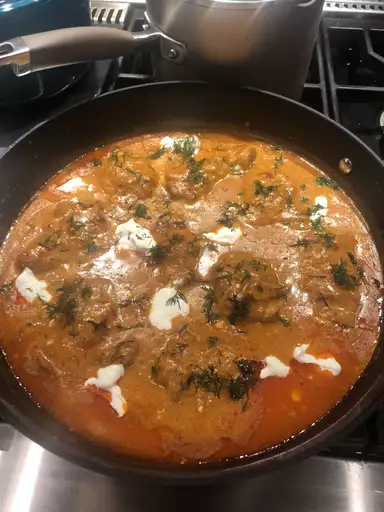

My favourite Chicken Paprikash
Back to main page

Description
A delicious and hearty home meal, the Chicken Paprikash is an absolute
favourite. It is filled with amazing scents and flavours, and goes very
well with rice or the traditional Hungarian dumplings. Let's get right to
it!
Ingredients
- 8 bone-in, skin on chicken thighs
- salt to taste
- 2 tablespoons of olive oil
- Two medium yellow onions, diced
- Three cloves of garlic
- Two tablespoons of tomato paste
- Four teaspoons all-purpose flour
- One teaspoon kosher salt, or to taste
- 1/2 teaspoon black pepper
- One teaspoon smoked hungarian paprika
- 1/4 cup sweet Hungarian paprika
- One pinch cayenne pepper
- Two cups chicken broth
- 2/3 cup sour cream at room temperature
- 1/4 cup heavy whipping cream
Steps to create Chicken Paprikash
-
Season chicken generously on both sides with salt. Heat olive oil in
a
heavy, deep-sided pan (that comes with a lid) over high heat and
brown
the chicken well, skin-side down, about 5 minutes; flip and continue
to
sear until other side is browned, 3 to 4 minutes more. Turn off heat.
Transfer the browned chicken to a plate and reserve until needed;
spoon
out excess chicken fat if desired.
-
Add onions and a pinch of salt to the same pan and saute over medium
until golden, about 5 minutes. Add garlic, tomato paste, and flour
and
cook, stirring, another 3 to 4 minutes to form a tomato roux. Stir in
1
teaspoon kosher salt, freshly ground black pepper, smoked paprika,
and
sweet paprika and cook for 1 minute. Add chicken broth and bring to a
simmer over high heat.
-
Reduce heat to medium-low and transfer chicken and accumulated juices
back into the pan. Baste the tops with the sauce, cover the pan with
the
lid, and simmer, basting occasionally with the sauce, until the
chicken
is no longer pink in the centers and is fork-tender, 45 to 60
minutes.
Remove the chicken and transfer to a plate.
-
Skim some fat off the top of the sauce if desired. Whisk heavy cream
and
sour cream into the sauce and bring to a simmer, stirring
occasionally.
Transfer the chicken and any juices back into the sauce. Simmer,
uncovered, basting often, until chicken is heated through and very
tender, about 10 minutes. Taste and adjust seasoning if needed.